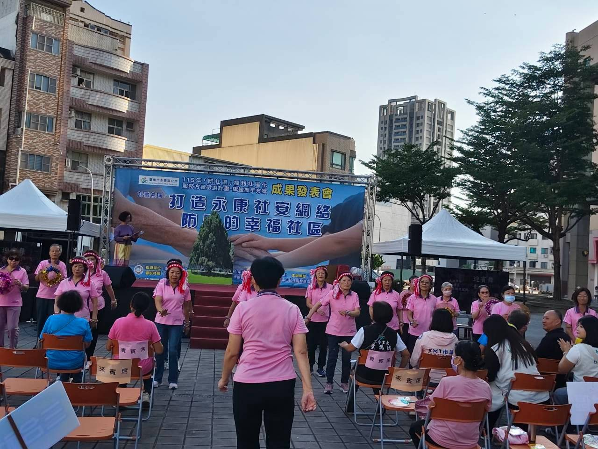
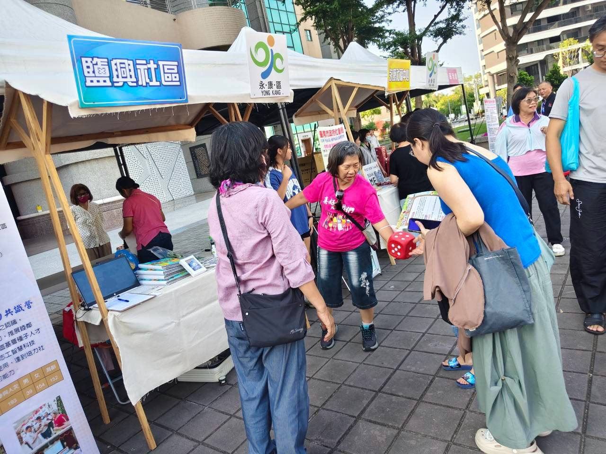
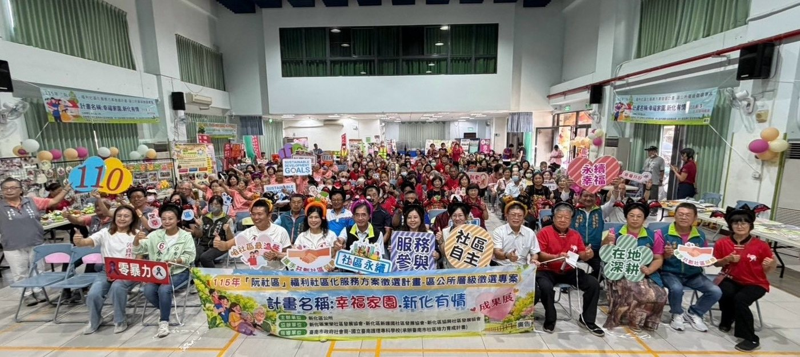

大手牽小手，串起社區關懷的力量
為展現臺南市溪南區社區推動福利社區化之豐碩成果，臺南市社區永續培力中心（溪南區）於115年度舉辦「溪南區小旗艦成果展」，邀集各領航與協力社區齊聚一堂，透過靜態展示、動態展演與經驗交流，完整呈現社區一年來在長者關懷、兒少陪伴、性別平等及社區互助等多元面向的深耕歷程。

「從單點推動轉化為彼此支援、共同成長的合作網絡。」
計畫推動初期，各協力社區在業務分工、資源盤點及跨社區協調上皆面臨不同挑戰。透過領航社區的經驗帶領與培力中心團隊的定期陪伴輔導，各社區逐步建立共識、釐清角色定位，並依據在地需求規劃貼近居民生活的服務方案，讓原本單點推動的社區工作，轉化為彼此支援、共同成長的合作網絡。


活動當日，各社區不僅透過海報與實物展示呈現推動成果，更分享執行過程中的真實故事與反思，讓與會者看見社區夥伴從摸索到自信展現的轉變。透過此次成果展，不僅凝聚了溪南區社區間的情感連結，也為未來持續深化聯合社區運作奠定穩固基礎。